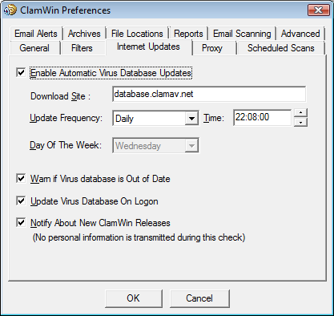
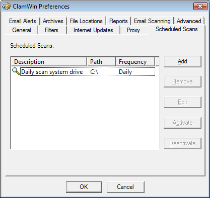
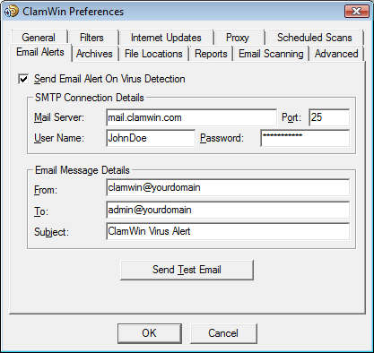
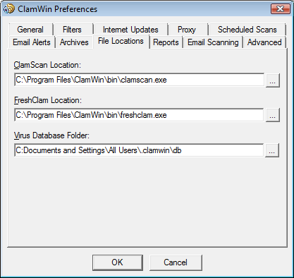
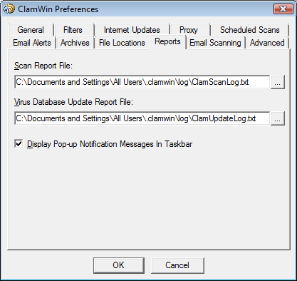
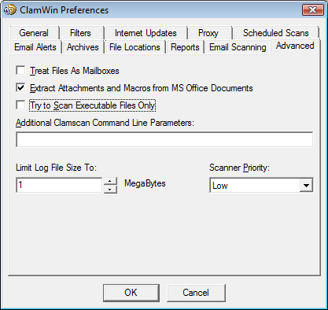

To configure ClamWin, either right-click on the system tray icon and select Configure ClamWin, or, from the main program window, select Preferences from the Tools menu. A dialogue with eleven tabs will be displayed (if you do not have the Microsoft add-in installed, the tab “Email Scanning” will not be displayed). Clicking OK will close the dialogue box and save any changes made. Clicking Cancel will close the dialogue box without saving any changes.
Each of the tabs is discussed below.
This tab has options that control ClamWin's behaviour when scanning, and what ClamWin should do about infected files. The Scanning Options control ClamWin's behaviour when scanning. Any combination of options can be selected. The options are as follows:
Display Infected Files Only: When ClamWin is running a scan, it displays the names of the files as it scans them. If this option is selected, ClamWin will only display the names of files that have been detected as infected. Selecting this option may slightly increase scanning speed.
Scan In Subdirectories: Select this option to have ClamWin scan subdirectories as well as the directory specified.
Display File Scanned % Progress Indicator: If this option is selected, ClamWin will display the name of the file that is at that moment being scanned, with the progress in percentages between brackets. For archives, a rotating line will be shown, indicating the scan is proceeding.
The Infected Files options control determine what action ClamWin should take if it detects a virus. Only one option can be selected. The options are:
Report Only: If this option is selected, ClamWin only reports that a virus was found.
Remove (Use Carefully): If this option is selected, ClamWin will permanently delete the infected file. The file will not be placed in Windows' Recycle Bin.
Move To Quarantine Folder: If this option is selected, ClamWin will move the infected file to the designated folder. To change the folder, enter the path in the text box, or click on the ... button to browse to a folder.
If a file with the same name is already present in the quarantine folder, then ClamWin will append a dot followed by a number to the new file, to avoid over-writing the existing file. E.g. if a file named eicar.com is in the quarantine folder, and a virus is found in a file named eicar.com, then the second copy will be moved to the quarantine folder and renamed to eicar.com.000, a third copy would be moved and renamed to eicar.com.001, etc.
Finally, the Unload Infected Programs from Computer Memory option determines whether ClamWin should try to unload a file from memory, if it detects it to be infected while performing a memory scan. This is necessary to successfully quarantine such a file.
On this tab, ClamWin can be configured to scan only certain types of files, or to ignore certain types of files. The two can be combined to give greater control over what types of files are scanned.

Specific files can be filtered by specifying the full path, e.g.:
C:\Path\to\folder\File.ext
Folders can be filtered by specifying the path, and including a * at the end, e.g.:
C:\Path\to\folder\*
Note that * will not match \, so if you want to include or exclude a folder with all sub-folders you need to use a regular expression syntax and add .* (dot star) at the end:
<C:\\Path\\to\\folder\\.*>
Regular expressions are enclosed in <> tags and \\ is needed because \ is a reserved character.
Regular expressions can be used for greater flexibility, but must be contained within angle brackets (<RegularExpression>). Information about regular expressions, including tutorials, are readily available on the web. Just use your favourite search engine to search for regular expression tutorial.
By default, the following patterns are excluded from virus scans:
*.dbx (used by Microsoft Outlook Express to store e-mails etc.)
*.tbb (used by Ritlabs The Bat! to store e-mails etc.)
*.pst (used by Microsoft Outlook to store data)
*.dat
*.log
*.evt
*.nsf
*.ntf
*.chm (Windows help files)
On this tab, you can control how ClamWin gets updates to the virus database.

Enable Automatic Virus Database Updates: When this option is selected, then ClamWin will automatically check for and download database updates. How often it checks and at what time can be set by the user.
If ClamWin is not running (or the computer is switched off) at the time specified, the update will be applied the next time ClamWin is started (which will normally be the next time the computer is switched on). The only exception is if the update frequency is set to "workdays", in which case it won't do anything until Monday.
The address of the server to be queried can be set manually. Most users will want to leave this at the default setting (database.clamav.net). However, if you have a local server that mirrors database.clamav.net, you can enter its address instead. For a list of mirrors, check out http://www.clamav.net.
Warn if Virus database is Out of Date: If this option is selected, ClamWin will warn you when your database is not actual anymore.
Update Virus Database On Logon: If this option is selected, ClamWin will check for database updates when a user logs on to the PC.
Notify About New ClamWin Releases: If this option is selected, ClamWin will check for new releases. This check is run five minutes after startup of ClamWin, and every 24 hours after that.
If you connect to the Internet via a proxy server, enter the details on this tab. If not, leave the details blank. Most users do not use a proxy server, and so can safely ignore this tab.

This tab allows the user to configure ClamWin to run scans at certain times. Details of scheduled scans are displayed. To add a scan, click the Add button, then set the description, frequency, time, and folder to scan.

An existing scheduled scan can be changed by clicking the Edit button, or removed by clicking the Remove button.
Scheduled scans can be activated or deactivated by clicking on the appropriate button. A deactivated scan will not run at the scheduled time.

To have ClamWin send an e-mail report when a virus is detected, check the Send Email Alert On Virus Detection option. Fill in the details for your SMTP server, and the details for the message (subject, from address, to address).
Note: some SMTP servers do not require a user name & password. If this is the case, leave these settings blank.
To test the settings, click the Send Test Email button.
When this option is selected, ClamWin will send an e-mail report whenever a virus is found. This e-mail will include the name of the computer that the e-mail was sent from, and a copy of the scan log.
ClamWin can check the files in archive files (such as .zip files) for viruses.

This tab allows the user to select whether or not ClamWin should check inside archive files, and set the maximum size of archive files to be checked, the maximum number of files to be extracted, and the maximum number of sub-archives to be extracted.
It should be noted that scanning within archives can slow down a scan, so disabling scanning of archives may reduce the time taken for a scan to complete.
This tab allows the locations of the ClamScan program file, FreshClam program file (the program used to retrieve database updates) and the virus database to be altered.
These values are set during installation, and should not normally need to be altered. Do not change these settings unless you know what you are doing. If they are incorrectly set, ClamWin will stop working.

This tab allows the user to change the location & name of the log files. Most users will not need to change these settings.

You can also enable or disable the display of pop-up notification messages on this tab. By default, such messages are enabled. Unchecking the Display Pop-up Notification Messages In Taskbar checkbox will prevent status messages appearing when viruses are detected, the virus database is updated, etc.
This tab is displayed only, if the Microsoft Outlook add-in is installed.

The user can decide to scan for incoming email messages and/or outgoing email messages.
This tab has four settings. The default settings will be fine for most users.

Treat Files As Mailboxes: If selected, ClamWin will parse all files as if they were MIME e-mail messages (e.g. Unix/Linux mailboxes, .eml files saved from Outlook Express). Note that non-MIME files can be scanned with this option selected, but this will slow the scan down.
Extract Attachments and Macros from MS Office Documents: If selected, ClamWin will check for macro viruses in MS Office documents.
Try to Scan Executable Files Only: If selected, ClamWin will check only executable files.
Additional Clamscan Command Line Parameters: If you want to use Clamscan command line options that are not currently supported by ClamWin, you can add them here.
Limit Log File Size To: Older logs will be deleted when necessary to keep the log file within the specified size.
Scanner Priority: This can be set to Low or Normal, and determines how the CPU cycles are split between ClamWin and other running applications. The default setting is Low which may make scans slower, but should have less impact on other applications.